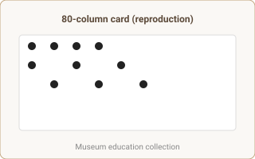

Artifacts
Selected artifacts supporting modules and timeline events. Each artifact includes provenance metadata and curator notes (to be populated).
-

Punched Card (Example)Provenance: Reproduction for education. Curator notes
-
 Transistor Diagram
Transistor DiagramProvenance: Public domain schematic. Curator notes